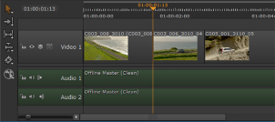
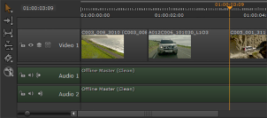

Unlike inserting, Overwrite does not incorporate downstream ripple and doesn’t alter the length of your sequence. Any clip instances you overwrite are destroyed, though they can easily be recovered from the source clips in the bin view.
|
 |
 |
| Pre-overwrite timeline | Post-overwrite timeline |
You can select a track before overwriting if you don’t want to target the lowest available track.
You can also use In and Out points to control what the clip overwrites and how many frames are included. See 3-Point Editing for more information.
To overwrite at the playhead:
| 1. | Navigate to Workspace > Editing to display the 2-up Viewer layout. |
| 2. | Double-click your sequence in the bin view to load it into the right-hand sequence Viewer |
| 3. | Double-click the source clip to load it into the left-hand clip Viewer |
| 4. | Place the playhead at the required edit point or timecode and select the target track, if necessary. |
| 5. | Navigate to Clip > Overwrite, or press M, to overwrite from the playhead for the duration of the source clip. |
All clip instances under the source clip are overwritten.
To overwrite from an In or Out point:
| 1. | Navigate to Workspace > Editing to display the 2-up Viewer layout. |
| 2. | Double-click your sequence in the bin view to load it into the right-hand sequence Viewer |
| 3. | Double-click the source clip to load it into the left-hand clip Viewer |
| 4. | Place an In or Out point on the timeline to determine the clip’s behavior: |
• In point - the source clip begins overwriting from its first frame at the In point specified downstream for the duration of the clip.
• Out point - the source clip begins overwriting from its last frame at the Out point specified upstream for the duration of the clip.
| 5. | Navigate to Clip > Overwrite, or press M, to overwrite from the In or Out point for the duration of the source clip. |
All clip instances under the source clip are overwritten.
|
|